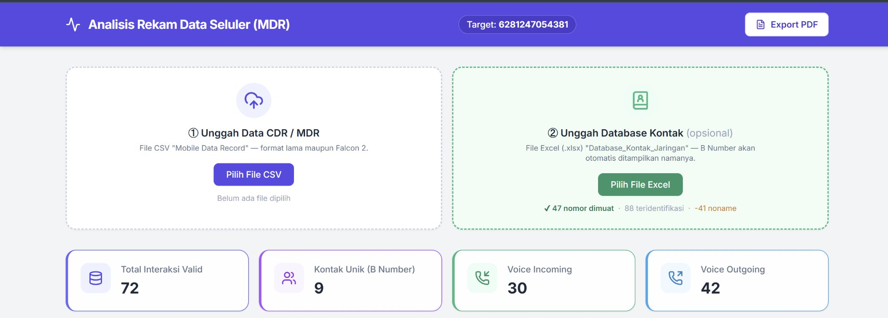
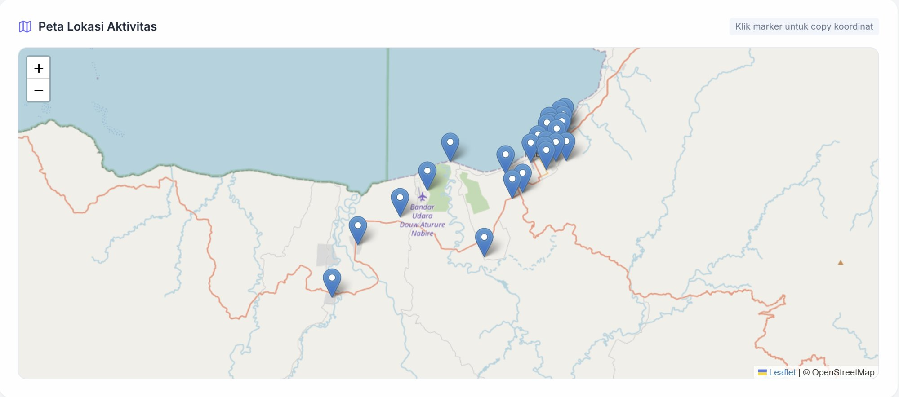
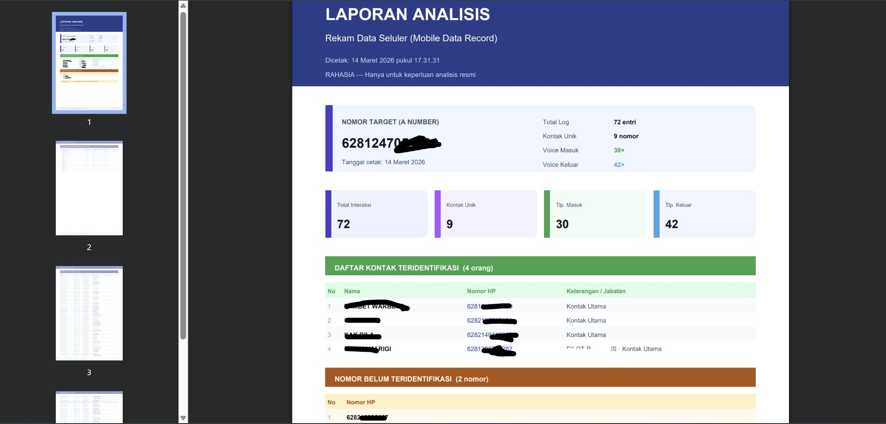
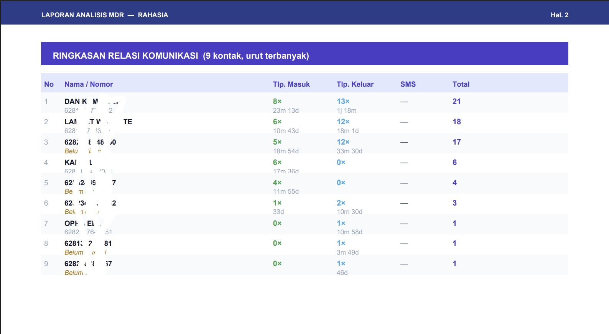

Upload CSV MDR/CDR dari provider, dapatkan statistik lengkap, peta lokasi BTS interaktif, identifikasi kontak, dan export laporan PDF siap cetak — dalam hitungan detik.

Proses analisis rekam data seluler seringkali memakan waktu dan rawan kesalahan jika dilakukan manual.
File CDR dari provider berisi ribuan baris data mentah yang tidak bisa langsung diinterpretasi tanpa tools khusus.
Koordinat BTS ada di data tapi tidak ada cara mudah untuk memvisualisasikannya ke peta secara otomatis.
B-Number hanya berupa angka — butuh proses manual untuk mencocokkan dengan database kontak yang ada.
Total interaksi, voice in/out, SMS, durasi — semua harus dihitung sendiri dari spreadsheet yang memakan berjam-jam.
Menyusun laporan analisis yang rapi dan siap presentasi membutuhkan banyak penyesuaian format secara manual.
Data CDR bersifat rahasia. Upload ke cloud atau tools online berisiko bocor — dibutuhkan solusi offline.
Dari upload CSV hingga laporan PDF — semua terotomatisasi, tidak perlu install software apapun.
Support format MDR lama maupun Falcon 2. Upload database kontak Excel opsional untuk identifikasi B-Number otomatis.
Total interaksi, kontak unik, voice in/out, SMS — langsung terhitung dan tersaji visual begitu file di-upload.
Visualisasi pola komunikasi berdasarkan jam dan hari. Deteksi kapan target paling aktif berkomunikasi.
Koordinat BTS di-plot ke OpenStreetMap secara real-time. Klik marker untuk copy koordinat langsung.
Match B-Number dengan database kontak Excel. Nama dan jabatan muncul otomatis di tabel ringkasan relasi.
Laporan lengkap siap cetak: ringkasan eksekutif, tabel relasi, timeline, daftar log, dan peta lokasi BTS.
Screenshot langsung dari aplikasi — bukan mock design. Ini yang akan Anda gunakan.



Proses analisis yang biasanya memakan berjam-jam kini selesai dalam hitungan detik.
Drag & drop atau pilih file CDR/MDR dari provider. Format lama maupun Falcon 2 otomatis terdeteksi dan di-parsing.
Sistem memproses data: hitung statistik, identifikasi kontak, plot koordinat BTS ke peta, dan susun timeline aktivitas secara instan.
Klik Export PDF. Laporan multi-halaman lengkap dengan cap RAHASIA, nomor target, timestamp, dan semua data analisis siap digunakan.
CDR Analyzer dirancang untuk konteks analisis komunikasi yang membutuhkan akurasi dan kecepatan tinggi.
Analisis pola komunikasi target, identifikasi jaringan kontak, dan rekonstruksi timeline aktivitas sebagai bahan penyidikan resmi.
Pemetaan lokasi BTS yang digunakan target selama periode tertentu untuk merekonstruksi pergerakan berdasarkan data seluler.
Generate laporan analisis berformat resmi yang siap diserahkan — lengkap dengan statistik, daftar kontak, dan peta lokasi.
Feedback langsung dari pengguna yang menggunakan CDR Analyzer dalam pekerjaan sehari-hari.
"Sebelumnya butuh 2–3 jam untuk mengolah satu file CDR di Excel. Dengan tool ini, analisis selesai dalam kurang dari satu menit. Peta BTS-nya juga langsung muncul otomatis."
"Fitur identifikasi kontak otomatis sangat membantu. Tinggal upload database Excel, semua B-Number langsung teridentifikasi namanya di tabel. Penyusunan laporan jadi jauh lebih cepat."
"Berjalan di browser tanpa instalasi adalah fitur unggulannya. Bisa dipakai di laptop manapun. Export PDF-nya juga rapi dengan format yang profesional — tidak perlu edit manual lagi."
Belum yakin? Temukan jawaban pertanyaan Anda di sini.
Tidak perlu instalasi. Tidak ada data yang keluar dari browser Anda. Langsung pakai sekarang.
Data tidak dikirim ke server · Berjalan 100% di browser · Tidak perlu instalasi